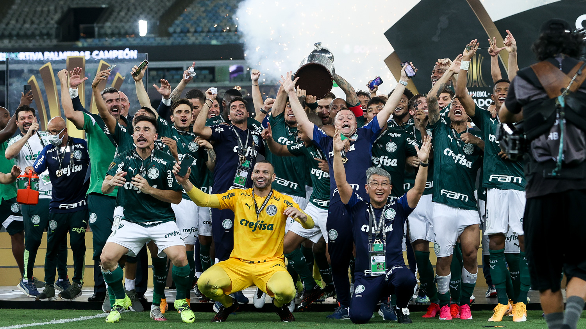

Imagens Com Descrição - Palmeiras
Palmeiras Campeão da Libertadores 2021
O elenco e a comissão técnica da Sociedade Esportiva Palmeiras (SEP) comemorando e erguendo a taça da Libertadores 2021, após derrotar o Flamengo por 2 a 1 na prorrogação, no estádio Centenário, em Montevidéu, Uruguai se consagrando tri-campeão da América.
Palmeiras Campeão da Libertadores 2020

O elenco e a comissão técnica da Sociedade Esportiva Palmeiras (SEP) comemorando e erguendo a taça da Libertadores 2020, após derrotar o Santos Futebol Clube por 1 a 0 com um gol nos últimos minutos, no estádio Maracanã, Rio de Janeiro, Brasil, se consagrando bicampeão da América.
Palmeiras Campeão da Libertadores 1999
 O elenco e a comissão técnica da Sociedade Esportiva Palmeiras (SEP) comemorando e erguendo a taça da Libertadores 1999, derrotando o Deportivo Cali nos pênaltis por 4 a 3, após ter perdido o primeiro jogo por 1 a 0 no estádio El Campín, em Bogotá, Colômbia, e fazendo 2 a 1 no Palestra Itália, São Paulo, Brasil, e se consagrando campeão da América.
O elenco e a comissão técnica da Sociedade Esportiva Palmeiras (SEP) comemorando e erguendo a taça da Libertadores 1999, derrotando o Deportivo Cali nos pênaltis por 4 a 3, após ter perdido o primeiro jogo por 1 a 0 no estádio El Campín, em Bogotá, Colômbia, e fazendo 2 a 1 no Palestra Itália, São Paulo, Brasil, e se consagrando campeão da América.